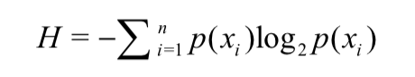

<!DOCTYPE html>
<html lang="" class="loading">
<head><meta name="generator" content="Hexo 3.8.0">
    <meta charset="UTF-8">
    <meta http-equiv="X-UA-Compatible" content="IE=edge,chrome=1">
    <meta name="viewport" content="width=device-width, minimum-scale=1.0, maximum-scale=1.0, user-scalable=no">
    <title>eggTargaryen</title>

    <meta name="apple-mobile-web-app-capable" content="yes">
    <meta name="apple-mobile-web-app-status-bar-style" content="black-translucent">
    <meta name="google" content="notranslate">
    <meta name="keywords" content="eggTargaryen,"> 
    <meta name="description" content="个人简介：1994-2013:呆在山东潍坊​        在这里长大，读完小初高，还有大学预科班，哈哈。        
2013-2017: 呆在湖北武汉​        在wuli度过了马马虎,"> 
    <meta name="author" content="eggTargaryen"> 
    <link rel="alternative" href="atom.xml" title="eggTargaryen" type="application/atom+xml"> 
    <link rel="icon" href="/img/logo.png"> 
    <link rel="stylesheet" href="//cdn.jsdelivr.net/npm/gitalk@1/dist/gitalk.css">
    <link rel="stylesheet" href="/css/diaspora.css">
</head>
</html>
<body class="loading">
    <div id="loader"></div>
    <div id="single">
    <div id="top" style="display: block;">
    <div class="bar" style="width: 0;"></div>
    <a class="icon-home image-icon" href="javascript:;"></a>
    <div title="播放/暂停" class="icon-play"></div>
    <h3 class="subtitle">决策树</h3>
    <div class="social">
        <!--<div class="like-icon">-->
            <!--<a href="javascript:;" class="likeThis active"><span class="icon-like"></span><span class="count">76</span></a>-->
        <!--</div>-->
        <div>
            <div class="share">
                <a title="获取二维码" class="icon-scan" href="javascript:;"></a>
            </div>
            <div id="qr"></div>
        </div>
    </div>
    <div class="scrollbar"></div>
</div>
    <div class="section">
        <div class="article">
    <div class="main">
        <h1 class="title">决策树</h1>
        <div class="stuff">
            <span>十一月 13, 2018</span>
            
  <ul class="post-tags-list"><li class="post-tags-list-item"><a class="post-tags-list-link" href="/tags/决策树/">决策树</a></li></ul>


        </div>
        <div class="content markdown">
            <h1 id="1-什么是决策树？"><a href="#1-什么是决策树？" class="headerlink" title="1. 什么是决策树？"></a>1. 什么是决策树？</h1><p>决策树是什么？(decision tree)  是一种分类与回归方法，主要用于分类，决策树模型呈现树形结构，是基于输入特征对实例进行分类的模型。我认为决策树其实是定义在特征空间与类空间上的条件概率分布！</p>
<p>使用决策树算法的主要步骤又是什么呢？ 可以分为三部分： </p>
<p>1 特征的选取 </p>
<p>2 决策树的生成</p>
<p>3 决策树的修剪 </p>
<p>当前决策树的主要流行的三个算法是 </p>
<p>ID3算法 </p>
<p>C4.5算法</p>
<p>CART算法(classification and regression tree)即分类与回归树</p>
<h1 id="2-ID3决策树"><a href="#2-ID3决策树" class="headerlink" title="2. ID3决策树"></a>2. ID3决策树</h1><p>不同类型的决策树主要区别是如何选择用于划分数据集的特征列。</p>
<p>划分数据集的大原则是:将无序的数据变得更加有序。我们可以使用多种方法划分数据集，但是每种方法都有各自的优缺点。组织杂乱无章数据的一种方法就是使用信息论度量信息，信息论是量化处理信息的分支科学。</p>
<p>在划分数据集之前之后信息发生的变化称为信息增益，知道如何计算信息增益，我们就可以计算每个特征值划分数据集获得的信息增益，获得信息增益最高的特征就是最好的选择。</p>
<p>在可以评测哪种数据划分方式是最好的数据划分之前，我们必须学习如何计算信息增益。集合信息的度量方式称为香农熵或者简称为熵，这个名字来源于信息论之父克劳德·香农。</p>
<p>香农熵（shang）的公式 如下：其数值代表一个集合 的混乱程度，值越大越混乱，其中n=类别数，p(x)为某类所占的比重。</p>
<p></p>
<p><strong>ID3算法的核心思想</strong>就是以信息增益来度量属性的选择，选择分裂后信息增益最大的属性进行分裂。该算法采用自顶向下的贪婪搜索遍历可能的决策空间。</p>
<p>示例代码：来自机器学习实战</p>
<figure class="highlight python"><table><tr><td class="gutter"><pre><span class="line">1</span><br><span class="line">2</span><br><span class="line">3</span><br><span class="line">4</span><br><span class="line">5</span><br><span class="line">6</span><br><span class="line">7</span><br><span class="line">8</span><br><span class="line">9</span><br><span class="line">10</span><br><span class="line">11</span><br><span class="line">12</span><br><span class="line">13</span><br><span class="line">14</span><br><span class="line">15</span><br><span class="line">16</span><br><span class="line">17</span><br><span class="line">18</span><br><span class="line">19</span><br><span class="line">20</span><br><span class="line">21</span><br><span class="line">22</span><br><span class="line">23</span><br><span class="line">24</span><br><span class="line">25</span><br><span class="line">26</span><br><span class="line">27</span><br><span class="line">28</span><br><span class="line">29</span><br><span class="line">30</span><br><span class="line">31</span><br><span class="line">32</span><br><span class="line">33</span><br><span class="line">34</span><br><span class="line">35</span><br><span class="line">36</span><br><span class="line">37</span><br><span class="line">38</span><br><span class="line">39</span><br><span class="line">40</span><br><span class="line">41</span><br><span class="line">42</span><br><span class="line">43</span><br><span class="line">44</span><br><span class="line">45</span><br><span class="line">46</span><br><span class="line">47</span><br><span class="line">48</span><br><span class="line">49</span><br><span class="line">50</span><br><span class="line">51</span><br><span class="line">52</span><br><span class="line">53</span><br><span class="line">54</span><br><span class="line">55</span><br><span class="line">56</span><br><span class="line">57</span><br><span class="line">58</span><br><span class="line">59</span><br><span class="line">60</span><br><span class="line">61</span><br><span class="line">62</span><br><span class="line">63</span><br><span class="line">64</span><br><span class="line">65</span><br><span class="line">66</span><br><span class="line">67</span><br><span class="line">68</span><br><span class="line">69</span><br><span class="line">70</span><br><span class="line">71</span><br><span class="line">72</span><br><span class="line">73</span><br><span class="line">74</span><br><span class="line">75</span><br><span class="line">76</span><br><span class="line">77</span><br><span class="line">78</span><br><span class="line">79</span><br><span class="line">80</span><br><span class="line">81</span><br><span class="line">82</span><br><span class="line">83</span><br><span class="line">84</span><br><span class="line">85</span><br><span class="line">86</span><br><span class="line">87</span><br><span class="line">88</span><br><span class="line">89</span><br><span class="line">90</span><br><span class="line">91</span><br><span class="line">92</span><br><span class="line">93</span><br><span class="line">94</span><br><span class="line">95</span><br><span class="line">96</span><br><span class="line">97</span><br><span class="line">98</span><br><span class="line">99</span><br><span class="line">100</span><br><span class="line">101</span><br><span class="line">102</span><br><span class="line">103</span><br><span class="line">104</span><br><span class="line">105</span><br></pre></td><td class="code"><pre><span class="line"><span class="keyword">from</span> math <span class="keyword">import</span> log</span><br><span class="line"><span class="keyword">import</span> operator</span><br><span class="line"></span><br><span class="line"><span class="function"><span class="keyword">def</span> <span class="title">createDataSet</span><span class="params">()</span>:</span></span><br><span class="line">    dataSet = [[<span class="number">1</span>, <span class="number">1</span>, <span class="string">'yes'</span>],</span><br><span class="line">               [<span class="number">1</span>, <span class="number">1</span>, <span class="string">'yes'</span>],</span><br><span class="line">               [<span class="number">1</span>, <span class="number">0</span>, <span class="string">'no'</span>],</span><br><span class="line">               [<span class="number">0</span>, <span class="number">1</span>, <span class="string">'no'</span>],</span><br><span class="line">               [<span class="number">0</span>, <span class="number">1</span>, <span class="string">'no'</span>]]</span><br><span class="line">    labels = [<span class="string">'no surfacing'</span>,<span class="string">'flippers'</span>]</span><br><span class="line">    <span class="comment">#change to discrete values</span></span><br><span class="line">    <span class="keyword">return</span> dataSet, labels</span><br><span class="line"></span><br><span class="line"><span class="comment">#计算香农熵</span></span><br><span class="line"><span class="comment">#首先，计算数据集中实例的总数。我们也可以在需要时再计 算这个值，但是由于代码中多次用到这个值，为了提高代码效率，我们显式地声明一个变量保存 实例总数。然后，创建一个数据字典，它的键值是最后一列的数值 。如果当前键值不存在，则 扩展字典并将当前键值加入字典。每个键值都记录了当前类别出现的次数。最后，使用所有类标 签的发生频率计算类别出现的概率。我们将用这个概率计算香农熵 ，统计所有类标签发生的次 数。下面我们看看如何使用熵划分数据集。</span></span><br><span class="line"><span class="function"><span class="keyword">def</span> <span class="title">calcShannonEnt</span><span class="params">(dataSet)</span>:</span></span><br><span class="line">    numEntries = len(dataSet)</span><br><span class="line">    labelCounts = &#123;&#125;</span><br><span class="line">    <span class="keyword">for</span> featVec <span class="keyword">in</span> dataSet: <span class="comment">#统计每个类别的出现的次数</span></span><br><span class="line">        currentLabel = featVec[<span class="number">-1</span>]</span><br><span class="line">        <span class="keyword">if</span> currentLabel <span class="keyword">not</span> <span class="keyword">in</span> labelCounts.keys(): labelCounts[currentLabel] = <span class="number">0</span></span><br><span class="line">        labelCounts[currentLabel] += <span class="number">1</span></span><br><span class="line">    shannonEnt = <span class="number">0.0</span></span><br><span class="line">    <span class="keyword">for</span> key <span class="keyword">in</span> labelCounts:</span><br><span class="line">        prob = float(labelCounts[key])/numEntries</span><br><span class="line">        shannonEnt -= prob * log(prob,<span class="number">2</span>) <span class="comment">#log base 2</span></span><br><span class="line">    <span class="keyword">return</span> shannonEnt</span><br><span class="line"></span><br><span class="line"><span class="comment">#按照给定特征划分数据集</span></span><br><span class="line"><span class="comment">#代码使用了三个输入参数:待划分的数据集、划分数据集的特征、需要返回 的特征的值。需要注意的是，Python语言不用考虑内存分配问题。Python语言在函数中传递的是 列表的引用，在函数内部对列表对象的修改，将会影响该列表对象的整个生存周期。为了消除这 个不良影响，我们需要在函数的开始声明一个新列表对象。因为该函数代码在同一数据集上被调 用多次，为了不修改原始数据集，创建一个新的列表对象 。数据集这个列表中的各个元素也是 列表，我们要遍历数据集中的每个元素，一旦发现符合要求的值，则将其添加到新创建的列表中。在if语句中，程序将符合特征的数据抽取出来。后面讲述得更简单，这里我们可以这样理解这段代码:当我们按照某个特征划分数据集时，就需要将所有符合要求的元素抽取出来。</span></span><br><span class="line"><span class="function"><span class="keyword">def</span> <span class="title">splitDataSet</span><span class="params">(dataSet, axis, value)</span>:</span></span><br><span class="line">    retDataSet = []</span><br><span class="line">    <span class="keyword">for</span> featVec <span class="keyword">in</span> dataSet:</span><br><span class="line">        <span class="keyword">if</span> featVec[axis] == value:</span><br><span class="line">            reducedFeatVec = featVec[:axis]     <span class="comment">#chop out axis used for splitting</span></span><br><span class="line">            reducedFeatVec.extend(featVec[axis+<span class="number">1</span>:])</span><br><span class="line">            retDataSet.append(reducedFeatVec)</span><br><span class="line">    <span class="keyword">return</span> retDataSet</span><br><span class="line">    </span><br><span class="line"><span class="comment">#选择最好的数据集划分方式</span></span><br><span class="line"><span class="function"><span class="keyword">def</span> <span class="title">chooseBestFeatureToSplit</span><span class="params">(dataSet)</span>:</span></span><br><span class="line">    numFeatures = len(dataSet[<span class="number">0</span>]) - <span class="number">1</span>      <span class="comment">#the last column is used for the labels</span></span><br><span class="line">    baseEntropy = calcShannonEnt(dataSet)</span><br><span class="line">    bestInfoGain = <span class="number">0.0</span>; bestFeature = <span class="number">-1</span></span><br><span class="line">    <span class="keyword">for</span> i <span class="keyword">in</span> range(numFeatures):        <span class="comment">#iterate over all the features</span></span><br><span class="line">        featList = [example[i] <span class="keyword">for</span> example <span class="keyword">in</span> dataSet]<span class="comment">#create a list of all the examples of this feature</span></span><br><span class="line">        uniqueVals = set(featList)       <span class="comment">#get a set of unique values</span></span><br><span class="line">        newEntropy = <span class="number">0.0</span></span><br><span class="line">        <span class="keyword">for</span> value <span class="keyword">in</span> uniqueVals:</span><br><span class="line">            subDataSet = splitDataSet(dataSet, i, value)</span><br><span class="line">            prob = len(subDataSet)/float(len(dataSet))</span><br><span class="line">            newEntropy += prob * calcShannonEnt(subDataSet)     </span><br><span class="line">        infoGain = baseEntropy - newEntropy     <span class="comment">#calculate the info gain; ie reduction in entropy</span></span><br><span class="line">        <span class="keyword">if</span> (infoGain &gt; bestInfoGain):       <span class="comment">#compare this to the best gain so far</span></span><br><span class="line">            bestInfoGain = infoGain         <span class="comment">#if better than current best, set to best</span></span><br><span class="line">            bestFeature = i</span><br><span class="line">    <span class="keyword">return</span> bestFeature                      <span class="comment">#returns an integer</span></span><br><span class="line"><span class="comment">#如果数据集已经处理了所有属性，但是类标签依然不是唯一 的，此时我们需要决定如何定义该叶子节点，在这种情况下，我们通常会采用多数表决的方法决 定该叶子节点的分类。</span></span><br><span class="line"><span class="function"><span class="keyword">def</span> <span class="title">majorityCnt</span><span class="params">(classList)</span>:</span></span><br><span class="line">    classCount=&#123;&#125;</span><br><span class="line">    <span class="keyword">for</span> vote <span class="keyword">in</span> classList:</span><br><span class="line">        <span class="keyword">if</span> vote <span class="keyword">not</span> <span class="keyword">in</span> classCount.keys(): </span><br><span class="line">            classCount[vote] = <span class="number">0</span></span><br><span class="line">        classCount[vote] += <span class="number">1</span></span><br><span class="line">    sortedClassCount = sorted(classCount.iteritems(), key=operator.itemgetter(<span class="number">1</span>), reverse=<span class="keyword">True</span>)</span><br><span class="line">    <span class="keyword">return</span> sortedClassCount[<span class="number">0</span>][<span class="number">0</span>]</span><br><span class="line"><span class="comment">#递归构建树</span></span><br><span class="line"><span class="function"><span class="keyword">def</span> <span class="title">createTree</span><span class="params">(dataSet,labels)</span>:</span></span><br><span class="line">    classList = [example[<span class="number">-1</span>] <span class="keyword">for</span> example <span class="keyword">in</span> dataSet]</span><br><span class="line">    <span class="keyword">if</span> classList.count(classList[<span class="number">0</span>]) == len(classList): </span><br><span class="line">        <span class="keyword">return</span> classList[<span class="number">0</span>]<span class="comment">#stop splitting when all of the classes are equal</span></span><br><span class="line">    <span class="keyword">if</span> len(dataSet[<span class="number">0</span>]) == <span class="number">1</span>: <span class="comment">#stop splitting when there are no more features in dataSet</span></span><br><span class="line">        <span class="keyword">return</span> majorityCnt(classList)</span><br><span class="line">    bestFeat = chooseBestFeatureToSplit(dataSet)</span><br><span class="line">    bestFeatLabel = labels[bestFeat]</span><br><span class="line">    myTree = &#123;bestFeatLabel:&#123;&#125;&#125;</span><br><span class="line">    <span class="keyword">del</span>(labels[bestFeat])</span><br><span class="line">    featValues = [example[bestFeat] <span class="keyword">for</span> example <span class="keyword">in</span> dataSet]</span><br><span class="line">    uniqueVals = set(featValues)</span><br><span class="line">    <span class="keyword">for</span> value <span class="keyword">in</span> uniqueVals:</span><br><span class="line">        subLabels = labels[:]       <span class="comment">#copy all of labels, so trees don't mess up existing labels</span></span><br><span class="line">        myTree[bestFeatLabel][value] = createTree(splitDataSet(dataSet, bestFeat, value),subLabels)</span><br><span class="line">    <span class="keyword">return</span> myTree                            </span><br><span class="line"><span class="comment">#测试</span></span><br><span class="line"><span class="function"><span class="keyword">def</span> <span class="title">classify</span><span class="params">(inputTree,featLabels,testVec)</span>:</span></span><br><span class="line">    firstStr = inputTree.keys()[<span class="number">0</span>]</span><br><span class="line">    secondDict = inputTree[firstStr]</span><br><span class="line">    featIndex = featLabels.index(firstStr)</span><br><span class="line">    key = testVec[featIndex]</span><br><span class="line">    valueOfFeat = secondDict[key]</span><br><span class="line">    <span class="keyword">if</span> isinstance(valueOfFeat, dict): </span><br><span class="line">        classLabel = classify(valueOfFeat, featLabels, testVec)</span><br><span class="line">    <span class="keyword">else</span>: classLabel = valueOfFeat</span><br><span class="line">    <span class="keyword">return</span> classLabel</span><br><span class="line"><span class="comment">#保存树</span></span><br><span class="line"><span class="function"><span class="keyword">def</span> <span class="title">storeTree</span><span class="params">(inputTree,filename)</span>:</span></span><br><span class="line">    <span class="keyword">import</span> pickle</span><br><span class="line">    fw = open(filename,<span class="string">'w'</span>)</span><br><span class="line">    pickle.dump(inputTree,fw)</span><br><span class="line">    fw.close()</span><br><span class="line"><span class="comment">#加载树</span></span><br><span class="line"><span class="function"><span class="keyword">def</span> <span class="title">grabTree</span><span class="params">(filename)</span>:</span></span><br><span class="line">    <span class="keyword">import</span> pickle</span><br><span class="line">    fr = open(filename)</span><br><span class="line">    <span class="keyword">return</span> pickle.load(fr) <span class="comment">#return 树</span></span><br></pre></td></tr></table></figure>
<p>测试代码：</p>
<figure class="highlight python"><table><tr><td class="gutter"><pre><span class="line">1</span><br><span class="line">2</span><br><span class="line">3</span><br><span class="line">4</span><br></pre></td><td class="code"><pre><span class="line">myDat,labels=createDataSet()</span><br><span class="line">myTree=createTree(myDat,labels)</span><br><span class="line">label=classify(myTree,labels,[<span class="number">1</span>,<span class="number">0</span>])</span><br><span class="line">print(label)</span><br></pre></td></tr></table></figure>
<h1 id="3-C4-5决策树"><a href="#3-C4-5决策树" class="headerlink" title="3. C4.5决策树"></a>3. C4.5决策树</h1><p><strong>但是id3有一个问题</strong>：使用信息增益的话其实是有一个缺点，那就是它偏向于具有大量值的属性。什么意思呢？就是说在训练集中，某个属性所取的不同值的个数越多，那么越有可能拿它来作为分裂属性。例如一个训练集中有10个元组，对于某一个属相A，它分别取1-10这十个数，如果对A进行分裂将会分成10个类，那么对于每一个类的信息熵=0，从该属性划分所得到的信息增益最大，但是很显然，这种划分没有意义。</p>
<p>于是C4.5改进了这种选择特征列的方法。使用信息增益率</p>
<p>正是基于此，ID3后面的C4.5采用了信息增益率这样一个概念。信息增益率使用“分裂信息”值将信息增益规范化。分类信息类似于Info(D)，定义如下：</p>
<p><a href="https://baike.baidu.com/pic/C4.5%E7%AE%97%E6%B3%95/20814636/0/dcc451da81cb39db1e957b93d9160924aa183099?fr=lemma&amp;ct=single" target="_blank" rel="noopener"></a></p>
<p>这个值表示通过将训练数据集D划分成对应于属性A测试的v个输出的v个划分产生的信息。信息增益率定义：</p>
<p><a href="https://baike.baidu.com/pic/C4.5%E7%AE%97%E6%B3%95/20814636/0/50da81cb39dbb6fdfbd7f9e30024ab18962b3762?fr=lemma&amp;ct=single" target="_blank" rel="noopener"></a></p>
<p>选择具有最大增益率的属性作为分裂属性。</p>
<p>其中gain(A)代表信息增益，splitinfo(a)代表经验熵，例如</p>
<p>D集（30个例子）按照属性A将D集分为两个子集，一个10个例子，一个20个例子，</p>
<p>splitinfo(D，A)=-1/3xlog(1/3)-2/3xlog(2/3)</p>
<h1 id="4-CART决策树"><a href="#4-CART决策树" class="headerlink" title="4. CART决策树"></a>4. CART决策树</h1><ul>
<li>当CART是分类树的时候，采用GINI值作为分裂节点的依据，当CART作为回归树的时候，使用样本的最小方差作为分裂节点的依据</li>
<li>是二叉树</li>
</ul>
<p></p>
<p>其中基尼指数Gini(D)表示集合的不确定性，基尼指数G(D,A)表示A=a分解后集合的不决定性。基尼指数越大，样本集合的不确定性越大。</p>
<p><a href="https://github.com/pbharrin/machinelearninginaction/blob/master/Ch09/regTrees.py" target="_blank" rel="noopener">cart回归树代码</a></p>
<h1 id="5-他们之间的区别"><a href="#5-他们之间的区别" class="headerlink" title="5. 他们之间的区别"></a>5. 他们之间的区别</h1><p>ID3使用信息增益作为目标函数；</p>
<p>C4.5算法改进分裂目标函数，用信息增益比(information gain ratio)来选择特征；</p>
<p>CART算法提出了只进行特征的二元分裂，即决策树是一棵二叉树，当CART是分类树的时候，采用GINI值作为分裂目标函数，当CART作为回归树的时候，使用样本的最小方差作为分裂目标函数；</p>
<p>树剪枝是为了防止过拟合。</p>

            <!--[if lt IE 9]><script>document.createElement('audio');</script><![endif]-->
            <audio id="audio" loop="1" preload="auto" controls="controls" data-autoplay="false">
                <source type="audio/mpeg" src="http://music.163.com/song/media/outer/url?id=543612338">
            </audio>
            
        </div>
        
    <div id="gitalk-container" class="comment link" data-ae="false" data-ci="389843d8e8f4a64fb373" data-cs="4aa2f626551b60a563b935cf7f7c5273b68b28aa" data-r="blogissue" data-o="eggtargaryen" data-a="eggtargaryen" data-d="false">查看评论</div>


    </div>
    
</div>


    </div>
</div>
</body>
<script src="//cdn.jsdelivr.net/npm/gitalk@1/dist/gitalk.min.js"></script>
<script src="//lib.baomitu.com/jquery/1.8.3/jquery.min.js"></script>
<script src="/js/plugin.js"></script>
<script src="/js/diaspora.js"></script>
<link rel="stylesheet" href="/photoswipe/photoswipe.css">
<link rel="stylesheet" href="/photoswipe/default-skin/default-skin.css">
<script src="/photoswipe/photoswipe.min.js"></script>
<script src="/photoswipe/photoswipe-ui-default.min.js"></script>

<!-- Root element of PhotoSwipe. Must have class pswp. -->
<div class="pswp" tabindex="-1" role="dialog" aria-hidden="true">
    <!-- Background of PhotoSwipe. 
         It's a separate element as animating opacity is faster than rgba(). -->
    <div class="pswp__bg"></div>
    <!-- Slides wrapper with overflow:hidden. -->
    <div class="pswp__scroll-wrap">
        <!-- Container that holds slides. 
            PhotoSwipe keeps only 3 of them in the DOM to save memory.
            Don't modify these 3 pswp__item elements, data is added later on. -->
        <div class="pswp__container">
            <div class="pswp__item"></div>
            <div class="pswp__item"></div>
            <div class="pswp__item"></div>
        </div>
        <!-- Default (PhotoSwipeUI_Default) interface on top of sliding area. Can be changed. -->
        <div class="pswp__ui pswp__ui--hidden">
            <div class="pswp__top-bar">
                <!--  Controls are self-explanatory. Order can be changed. -->
                <div class="pswp__counter"></div>
                <button class="pswp__button pswp__button--close" title="Close (Esc)"></button>
                <button class="pswp__button pswp__button--share" title="Share"></button>
                <button class="pswp__button pswp__button--fs" title="Toggle fullscreen"></button>
                <button class="pswp__button pswp__button--zoom" title="Zoom in/out"></button>
                <!-- Preloader demo http://codepen.io/dimsemenov/pen/yyBWoR -->
                <!-- element will get class pswp__preloader--active when preloader is running -->
                <div class="pswp__preloader">
                    <div class="pswp__preloader__icn">
                      <div class="pswp__preloader__cut">
                        <div class="pswp__preloader__donut"></div>
                      </div>
                    </div>
                </div>
            </div>
            <div class="pswp__share-modal pswp__share-modal--hidden pswp__single-tap">
                <div class="pswp__share-tooltip"></div> 
            </div>
            <button class="pswp__button pswp__button--arrow--left" title="Previous (arrow left)">
            </button>
            <button class="pswp__button pswp__button--arrow--right" title="Next (arrow right)">
            </button>
            <div class="pswp__caption">
                <div class="pswp__caption__center"></div>
            </div>
        </div>
    </div>
</div>


</html>